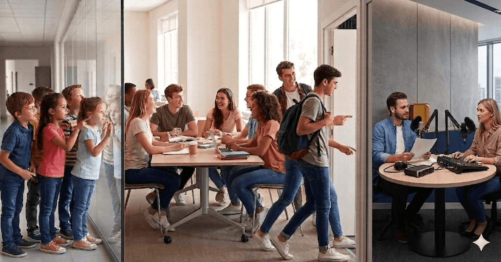
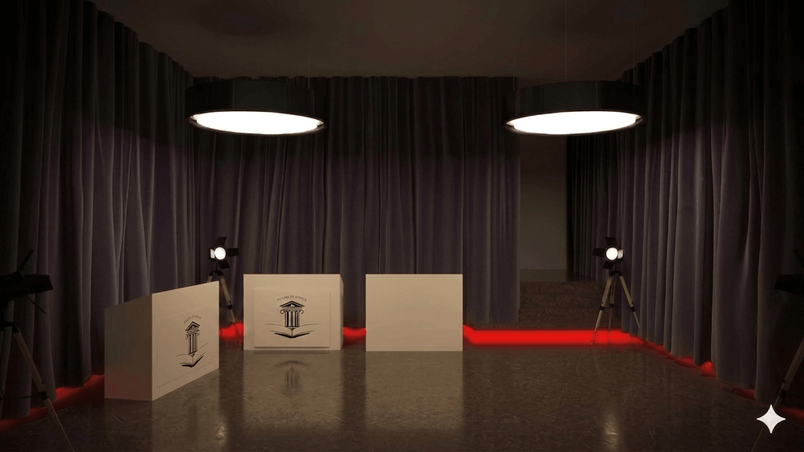
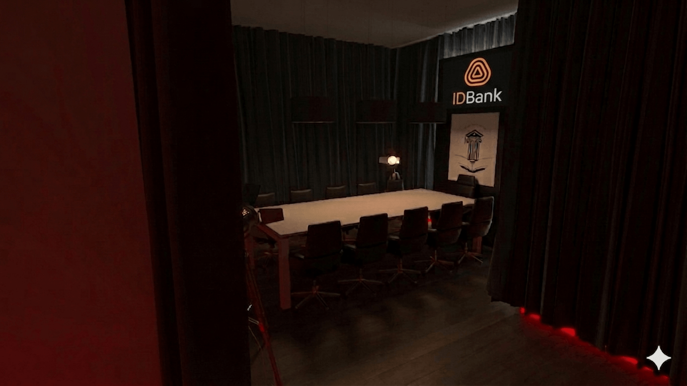

«Ուսանողական հարթակ» նախագիծ
«Ուսանողական Հարթակ» նախագիծը համաձայնեցված է՝ ԵՊՀ, ԵՊԲՀ, ԵՊՏՀ, ՀՊՄՀ, ԲՊՀ, ՃՇՀԱՀ, Հ.ԵՎ.Հ ուսանողական խորհուրդների հետ։ Նախագիծը ձևավորված է որպես միջբուհական ուսանողական նախաձեռնություն, որի նպատակն է ստեղծել ակտիվ, բաց և համագործակցային միջավայր Հայաստանի տարբեր բուհերի ուսանողների համար։ Ծրագիրը ներկայացնում է ինտելեկտուալ և ժամանցային խաղերի ձևաչափ, որտեղ ուսանողները հնարավորություն են ստանում անցկացնել ակտիվ և հետաքրքիր ժամանակ, զարգացնել թիմային մտածողություն, ձեռք բերել նոր ծանոթություններ և ձևավորել իրենց հասակակիցներից կազմված լայն սոցիալական շրջապատ, որը կարող է կարևոր դեր ունենալ նրանց հետագա անձնական և մասնագիտական զարգացման մեջ։ Նախագծի նպատակն է զարգացնել միջբուհական կապերը՝ ձևավորելով մրցակցային և միաժամանակ ընկերական հարթակ, որտեղ ուսանողները հնարավորություն կունենան շփվել ազատ, անմիջական և անկաշկանդ միջավայրում։ Նախագծի կառուցվածքում ներառված են ուսանողական միջոցառումներ, ինտերակտիվ խաղեր և YouTube հարթակում ցուցադրվող հաղորդումների շարք, որոնք համադրում են ժամանցը, մրցակցությունը և ուսանողական գաղափարների ներկայացումը մեդիա դաշտում՝ կարևորելով դրանց լսելիությունն ու տեսանելիությունը։
Մենք լուծում ենք այն խնդիրը, որ պետական և բուհական մակարդակով կազմակերպվող միջոցառումները հիմնականում կրում են պաշտոնական բնույթ, ինչի արդյունքում ուսանողները հաճախ զրկվում են ազատ շփման և ինքնարտահայտման հնարավորությունից։ Մեր հարթակը ստեղծված է հենց այդ բացը լրացնելու համար՝ առաջարկելով ավելի բաց, դինամիկ և ուսանողակենտրոն միջավայր։ Մեր գաղափարի կարևոր ուղղություններից մեկն է ինտելեկտուալ խաղերի շրջանակում ապահովել 1000+ ուսանողների ներգրավվածություն՝ ձևավորելով լայնամասշտաբ մրցակցային դաշտ, որտեղ հաղթող մասնակիցները կարող են իրենց դիրքավորել որպես առաջատարներ միջբուհական մակարդակում։ Սա ձևավորում է ոչ միայն մրցակցություն, այլ նաև ուժեղ մոտիվացիոն միջավայր, որը խթանում է ուսանողների զարգացմանն ու ակտիվությանը, որը կարող է նպաստել դիմորդների թվի աճին։ Այս ամենից զատ, YouTube հարթակում կստեղծվի առանձին ալիք, որտեղ ուսանողական խորհուրդների նախագահները,հովանավոր ընկերությունների ներկայացուցիչները, լավագույն խաղացողները և հետաքրքիր գաղափարներ ունեցող ուսանողները հարցազրույցների միջոցով(pot cast հաղորդաշար) հնարավորություն կունենան ներկայանալ հանրային դաշտում՝ խոսելով խաղերի,հովանանվորների կատարած աշխատանքի կարևորության, համագործակցությունների, իրենց նպատակների և կրթության կարևորության մասին։

Ուսանողական խորհուրդների հետ քննարկումից հետո որոշվեց՝ առաջին փուլում անցկացնել ուսանողական կարմիր թե սև՝ ՄԱՖԻԱ, խաղի մրցույթ։ Մենք այս խաղը ընտրեցինք պատկերացնելով, որ նախագծի հաջող ընթացքում կձևավորվի առողջ և կրեատիվ մտածող ուսանողներից կազմված մեծ թիմ ՝ընտանիք, իսկ խաղն իր ձևաչափում թույլ է տալիս ավելի լավ ճանաչել միմյանց: Բարձր մակարդակի կազմակերպումը մեզ կապահովի պարբերաբար անցկացվող առաջնություններում մասնակիցների թվի աճ։ Խաղի անցկացման վայրում լինելու է 5 խաղասրահ, որոնցից 3-ը մրցույթային են, իսկ 2-ը՝ նախատեսված են արտամրցույթային խաղերի համար։ Մենք բարձր ենք գնահատում արտամրցույթային խաղերի կարևորությունը, քանի որ հենց այդ խաղերն են ապահովում մրցույթից դուրս մնացած մասնակիցների շարունակական ներգրավվածությունը, ստեղծում ավելի ազատ և ստեղծարար միջավայր, նպաստում նոր կապերի ձևավորմանը և պահպանում ընդհանուր հետաքրքրվածությունն ու ակտիվությունը ամբողջ միջոցառման ընթացքում։


Մենք ձգտում ենք ժամանակի ընթացքում մեր ծրագիրը զարգացնել և հասցնել այնպիսի մակարդակի, որտեղ այն կդառնա Հայաստանի ամենամեծ միջբուհական ուսանողական հարթակներից մեկը՝ ներգրավելով առնվազն 5000 մասնակից։Առաջին խողաշրջանի բարձր մակարդակի կազմակերպումը այս տեսլականը կդարձնեն իրական։ «Մաֆիա» խաղը, լինելով տարիներով սիրված և շարունակական հետաքրքրություն ունեցող ինտելեկտուալ խաղ, մեզ հնարավորություն է տալիս ձևավորել կայուն միջբուհական առաջնություն, որը կանցկացվի պարբերաբար՝ յուրաքանչյուր 6 ամիսը մեկ կամ տարեկան մեկ անգամ։ Այս մոդելը ձևավորում է շարունակական շղթայական զարգացում, որտեղ ամեն տարի բուհերն ավարտող մասնակիցներին փոխարինում են նոր ուսանողները՝ ապահովելով ծրագրի կայուն աճն ու ազդեցության ընդլայնումը։ Բացի «Մաֆիա» խաղից, մենք նպատակ ունենք ընդլայնել նախագծի շրջանակները՝ իրականացնելով լայնամասշտաբ ուսանողական ծրագրեր։Նախատեսում ենք կազմակերպել Հայաստանի ամենախոշոր ուսանողական արշավական նախագիծը, որը կնկարահանվի և կհրապարակվի YouTube հարթակում՝ հանրայնացնելով ուսանողական ակտիվ կյանքը և խթանելով կրթության կարևորության ընկալումը պատանի սերնդի շրջանում։Այս նախագիծը միավորում է արկածային, կրթական և մեդիա բաղադրիչները՝ ստեղծելով եզակի փորձառություն և լայն հանրային ազդեցություն։ Միաժամանակ, արդեն սկսել ենք աշխատանքներ մեծ ինտելեկտուալ հեռուստաշոու ստեղծելու ուղղությամբ, որը իր ձևաչափով նման կլինի հայտնի ինտելեկտուալ հաղորդումներին, սակայն կլինի ավելի լայնամասշտաբ և ինտրիգային։ Շոուին կմասնակցեն ճանաչված ինտելեկտուալ խաղերի փորձառու մասնակիցներ, ովքեր կձևավորեն իրենց թիմերը՝ ներգրավելով ուսանողների։ Այս նախաձեռնությունը կստեղծի առավել մրցակցային և զարգացնող միջավայր, կնպաստի խելացի ուսանողների առաջխաղացմանը և կհանգեցնի այնպիսի սերնդի ձևավորմանը, որը ոչ միայն կրթված է, այլ նաև ճանաչված և ակտիվ մեդիա հարթակներում։